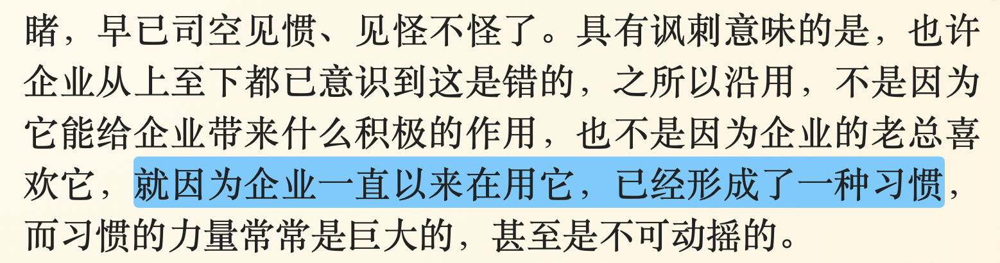

坑获：用户的习惯岂是你想改就能改
王福强
读到叶茂中的《广告人手记》里这段，有些感触，遂与大家分享些许感触…

用户习惯是一个很“顽固”的事情， 不是说这个东西不好，而是要有一个正确的认识， 不能觉得自己手里的“锤子”更好，就贬低客户手里的“棒槌”，很多时候，熟悉或许才是最合适的选择。
2020年给李总 1公司输入了一套自助式数据分析与可视化平台，从我的角度，有了这套东西，此后公司部门里绝大部分数据需求都可以完全免去研发的介入，一个普通研发人员的年薪，换来公司全面的数据智能化改观，应该是很划算的事情，但现实却是打脸。
从上到下一直是基于Excel的工作方式和汇报形式，从上层领导的汇报形式要求，到员工的技能和工作流程与结构配比，其实都是基于Excel的， 你要是说上套系统就解决所有问题了，那肯定是很扯淡的事情。
要做变革，首先应该是观念的变革，没有观念的变更，就不要谈习惯上的改变，从这个角度来说，很多公司天天忽悠客户公司做数字化、数智化转型，本身就是很扯淡的事情， 我老早就说过，要做这些转型，首先是一把手自己有没有这个认识，有没有观念上的相应认知和转变，然后再谈规划和实施。
所以，此后我一般不再“为客户着想”，而是根据客户的现状，“辨证施治”，有需求，给alternatives建议，客户自己做主 要不要做，要做，然后再谈后面怎么做的事情。 我感觉，只是我感觉哈， 有些客户其实需要的不是什么先进经验，更需要的是根据组织现状和习惯如何逐步改进的举措。
当然，从商务和销售的角度来看，我的做法肯定是很傻逼的，不propose超豪华套餐，怎么做通货膨胀？ 没办法， 一贯做事的风格就是这样， 先把事儿做烂再改进的套路我不是不懂，但不愿意做。
我当然知道怎么TimeUnit.SECONDS.sleep(5)…
Anyway, 尊重客户的习惯，尊重客户的组织现状，这其实才是我想说的。
这里也跟李总道个歉，确实事情没做好，服务没到位↩︎
「为AI疯狂」星球上，扶墙老师正在和朋友们讨论有趣的AI话题，你要不要⼀起来呀？^-^
这里
- 不但有及时新鲜的AI资讯和深度探讨
- 还分享AI工具、产品方法和商业机会
- 更有体系化精品付费内容等着你，加入星球(https://t.zsxq.com/0dI3ZA0sL) 即可免费领取。(加入之后一定记得看置顶消息呀！)

存量的时代，省钱就是赚钱。
在增量的时代，省钱其实是亏钱。
避坑儿是省钱的一种形式，更是真正聪明人的选择！
弯路虽然也是路，但还是能少走就少走，背后都是高昂的试错成本。